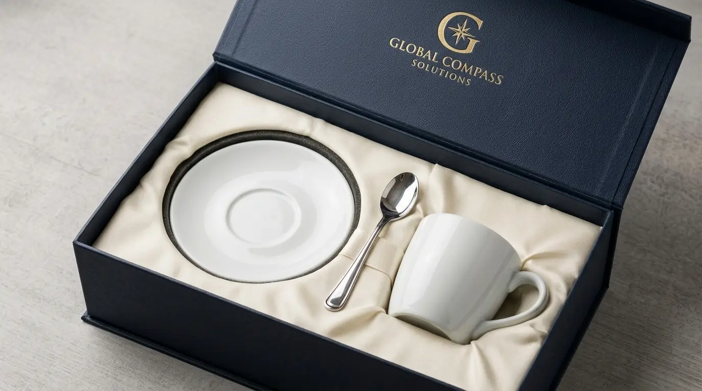
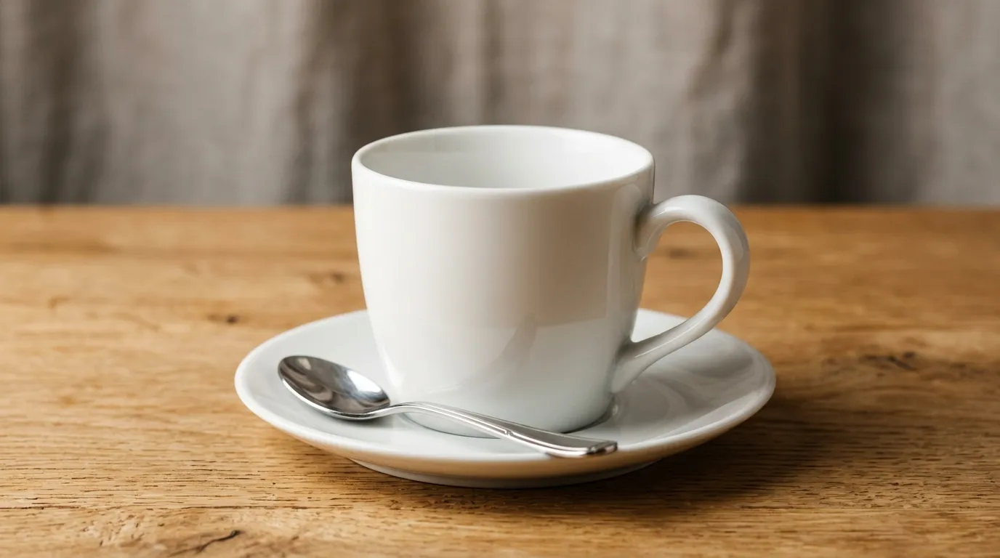

24 Souvenir Kantor Custom Logo yang Cocok untuk Event, Seminar, hingga Company Gathering
 Meilita Mujayanti (mel)
3 Agustus 2026
6 Menit Baca
Meilita Mujayanti (mel)
3 Agustus 2026
6 Menit Baca

Souvenir kantor custom logo untuk event mencakup berbagai produk yang dipilih berdasarkan skala acara, mulai dari seminar kecil hingga company gathering berskala besar, dengan tujuan memperkuat kesan dan identitas brand perusahaan. Jenis souvenir untuk event perlu disesuaikan dengan skala dan sifat acara. Kombinasi produk dalam satu goodie bag dapat meningkatkan kesan acara secara keseluruhan.
Souvenir kantor custom logo untuk event mencakup berbagai produk yang dipilih berdasarkan skala acara, mulai dari seminar kecil hingga company gathering berskala besar, dengan tujuan memperkuat kesan dan identitas brand perusahaan. Jenis souvenir untuk event perlu disesuaikan dengan skala dan sifat acara. Souvenir seminar umumnya berfokus pada fungsi praktis bagi peserta. Souvenir company gathering lebih menekankan aspek kebersamaan dan kenyamanan. Kombinasi produk dalam satu goodie bag dapat meningkatkan kesan acara secara keseluruhan.
- Mengapa Souvenir untuk Event Perlu Dibedakan dari Souvenir Kantor Harian?
- Apa Saja Pilihan Souvenir Kantor Custom Logo untuk Seminar?
- Apa Saja Pilihan Souvenir Kantor Custom Logo untuk Company Gathering?
- Apa Saja Pilihan Souvenir Kantor Custom Logo untuk Acara Formal Lain?
- Bagaimana Cara Memilih Souvenir yang Tepat Berdasarkan Jenis Acara?
- Kesimpulan
- FAQ
Mengapa Souvenir untuk Event Perlu Dibedakan dari Souvenir Kantor Harian?
Souvenir untuk event perlu dibedakan dari souvenir kantor harian karena konteks penggunaannya berbeda, yaitu untuk momen tertentu yang bersifat temporer dan melibatkan banyak peserta dalam waktu bersamaan.
Souvenir kantor harian umumnya digunakan secara individual dan berkelanjutan oleh satu penerima, sehingga fokus utamanya adalah fungsi jangka panjang. Sementara itu, souvenir untuk event lebih menekankan pada kesan yang tercipta selama acara berlangsung, sekaligus tetap memberi nilai guna setelah acara selesai agar logo perusahaan terus terpapar kepada peserta.
Perbedaan ini juga memengaruhi jumlah pemesanan. Souvenir event biasanya dipesan dalam jumlah besar sesuai jumlah peserta acara, sehingga efisiensi produksi dan konsistensi kualitas menjadi pertimbangan penting dalam pemilihan produk.
Apa Saja Pilihan Souvenir Kantor Custom Logo untuk Seminar?
Pilihan souvenir kantor custom logo untuk seminar umumnya berupa produk fungsional yang dapat langsung digunakan peserta selama acara berlangsung, seperti alat tulis, notebook, tas seminar, dan lanyard.
- 1 Notebook dan pulpen custom logo
- 2 Tas seminar atau totebag
- 3 Lanyard dan name tag custom logo
- 4 Tumbler atau botol minum
- 5 Flashdisk custom logo
- 6 Sticky notes dan stabilo custom logo
- 7 Map dokumen custom logo
- 8 Gantungan kunci custom logo
Pemilihan kombinasi produk di atas biasanya disesuaikan dengan durasi dan sifat seminar. Seminar dengan durasi singkat cenderung cukup dengan kombinasi alat tulis dan lanyard, sementara seminar dengan durasi panjang atau bersifat pelatihan intensif dapat menambahkan tumbler dan tas sebagai pelengkap kenyamanan peserta.

Apa Saja Pilihan Souvenir Kantor Custom Logo untuk Company Gathering?
Pilihan souvenir kantor custom logo untuk company gathering umumnya berupa produk yang mendukung suasana kebersamaan dan kenyamanan peserta selama acara, seperti apparel, perlengkapan outdoor, dan aksesori bertema santai.
- 9 Kaos atau polo shirt custom logo
- 10 Topi custom logo
- 11 Tumbler atau botol minum custom logo
- 12 Totebag custom logo
- 13 Payung custom logo
- 14 Handuk kecil custom logo
- 15 Powerbank custom logo
- 16 Kipas lipat custom logo
- 17 Sunblock atau lip balm custom logo
- 18 Kacamata hitam custom logo
Company gathering biasanya berlangsung di luar lingkungan kantor dan melibatkan aktivitas fisik atau rekreasi, sehingga pemilihan souvenir cenderung mengarah pada produk yang mendukung kenyamanan dan kepraktisan selama acara berlangsung.
Apa Saja Pilihan Souvenir Kantor Custom Logo untuk Acara Formal Lain?
Selain seminar dan company gathering, beberapa jenis event formal lain seperti konferensi, peluncuran produk, dan penghargaan tahunan juga membutuhkan souvenir dengan karakteristik tersendiri.
- 19 Plakat atau piala custom logo
- 20 Agenda atau planner custom logo
- 21 Kartu ucapan custom logo
- 22 Kotak presentasi custom logo
- 23 Mug custom logo
- 24 Payung lipat custom logo
Untuk acara formal dengan tamu VIP atau undangan khusus, souvenir yang dipilih umumnya menggunakan bahan dan finishing yang lebih baik dibandingkan souvenir untuk peserta umum, guna menyesuaikan kesan eksklusif yang ingin disampaikan.
Bagaimana Cara Memilih Souvenir yang Tepat Berdasarkan Jenis Acara?
Cara memilih souvenir yang tepat berdasarkan jenis acara adalah dengan mempertimbangkan durasi acara, lokasi penyelenggaraan, profil peserta, dan pesan yang ingin disampaikan perusahaan melalui souvenir tersebut.
Durasi Acara
Acara dengan durasi singkat dan bersifat formal, seperti seminar setengah hari, umumnya cukup menggunakan kombinasi alat tulis dan tas ringan. Sebaliknya, acara dengan durasi panjang atau melibatkan aktivitas outdoor, seperti company gathering, membutuhkan produk yang lebih fungsional untuk mendukung kenyamanan fisik peserta.
Lokasi Acara
Lokasi acara juga menjadi pertimbangan penting. Acara indoor seperti konferensi lebih cocok dengan souvenir berbasis alat tulis dan dokumen, sedangkan acara outdoor memerlukan produk tambahan seperti topi, payung, atau kipas untuk mengantisipasi kondisi cuaca.
Profil Peserta
Profil peserta turut memengaruhi pemilihan produk. Peserta internal seperti karyawan biasanya cukup dengan souvenir fungsional standar, sementara peserta eksternal seperti klien atau tamu undangan sebaiknya menerima souvenir dengan kualitas dan finishing yang lebih baik untuk mencerminkan penghargaan perusahaan terhadap kehadiran mereka.
Butuh Souvenir untuk Event Perusahaan Anda?
Konsultasikan kebutuhan souvenir kantor custom logo untuk event, seminar, atau company gathering Anda dengan tim kami untuk mendapatkan rekomendasi produk terbaik.
Konsultasi SekarangKesimpulan
Pemilihan souvenir kantor custom logo untuk event, seminar, hingga company gathering perlu disesuaikan dengan karakteristik masing-masing acara agar fungsinya optimal dan kesan brand tersampaikan dengan baik. Dua puluh empat pilihan produk di atas dapat dijadikan referensi awal, namun kombinasi akhir tetap perlu disesuaikan dengan durasi, lokasi, profil peserta, serta anggaran yang tersedia. Perencanaan yang matang sejak awal akan membantu perusahaan menghadirkan souvenir yang tidak hanya berkesan, tetapi juga mendukung kelancaran acara secara keseluruhan.
FAQ Seputar Souvenir Kantor Custom Logo untuk Event